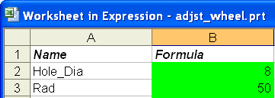
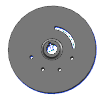

在电子表格的 B 列中进行下列修改：
Hole_Dia = 8
Rad = 50

在电子表格菜单栏中点击加载项→更新公式。
等待成功信息显示在电子表格窗口的底部。
更新表达式功能将把电子表格中的全部数据传送回 NX 中，现在，您需要更新部件，所以，您需要返回 NX 并在表达式对话框中应用所做的更改。
关闭 Excel。
注意到您在电子表格中做出的更改现在反映到表达式对话框的表达式列表中，但尚未更新部件。
点击确定。
将更新部件几何体。

关闭部件。